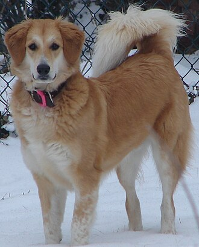
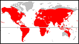

¿Qué son los perros?
El perro (Canis familiaris o Canis lupus familiaris, dependiendo
de si se lo considera una especie por derecho propio o una subespecie del lobo),
llamado perro doméstico o can, es un mamífero carnívoro de la familia de
los cánidos, que constituye una especie del género Canis.
Su tamaño, su forma y su pelaje es muy diverso y varía según la raza. Posee
un oído y un olfato muy desarrollados, y este último es su principal órgano
sensorial. Su longevidad media es de diez a trece años, dependiendo de la raza.

Características de los perros
En comparación con lobos de tamaño equivalente, los perros tienden a tener
el cráneo un 20 % más pequeño y el cerebro un 10 % más pequeño, además de
tener los dientes más pequeños que otras especies de cánidos. El perro
requiere menos calorías para vivir que el lobo. Su dieta de sobras de los
humanos hizo que su cerebro grande y los músculos mandibulares utilizados
en la caza dejaran de ser necesarios.
La piel del perro doméstico tiende a ser más gruesa que la del lobo.
Sus patas suelen ser más cortas que las de un lobo y su cola tiende a
curvarse hacia arriba.

Hábitat de los perros
No existen límites para definir un hábitat preferido para los perros,
pueden adaptarse, siempre y cuando exista disponibilidad de alimentos y
agua. Ellos pueden sobrevivir desde los 0 msnm hasta las grandes alturas,
así mismo sobreviven a climas extremadamente cálidos y fríos. De igual manera,
están distribuidos por todo el mundo; cada raza adaptada a la región en la que
está.
